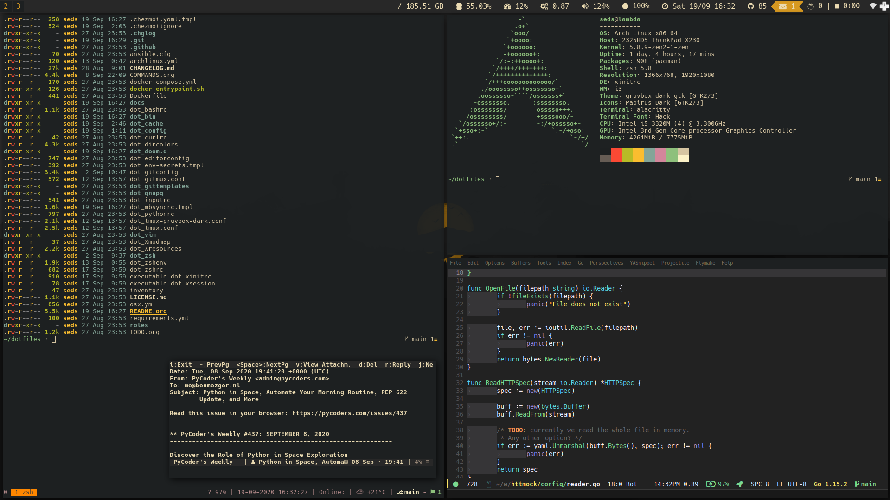
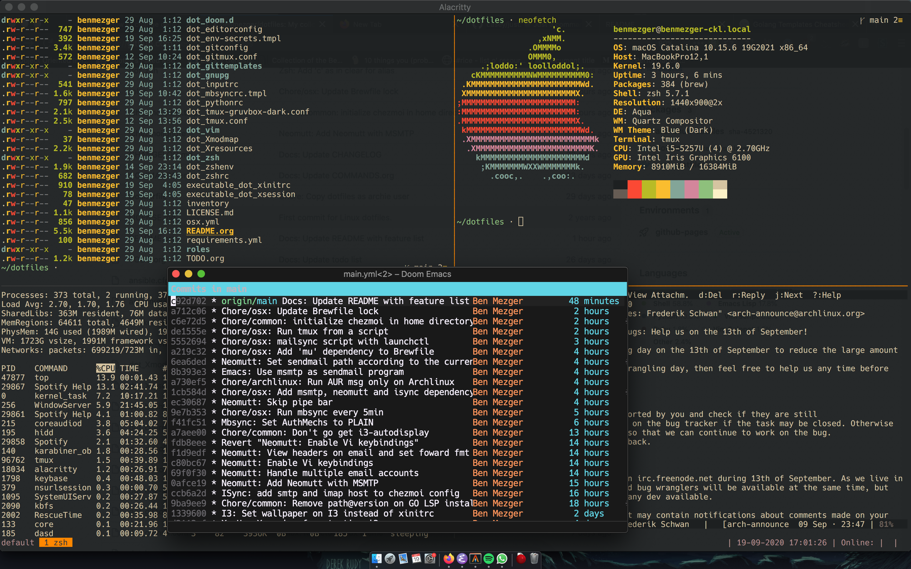

README
Github does not render orgmode files properly, see for a better view of this documentation.
Features
-
Auto install all system dependencies
-
Applies secrets and password with
bitwarden -
Custom scripts in
.bin -
Alacrittyconfig based on OS -
fishconfiguration -
neomuttsupport with multiple accounts -
msmtpfor sending emails with multiple account support -
mbsyncfor syncing emails with multiple account support -
Custom
curlconfiguration -
Custom
dircolors(Gruvbox-dark colorscheme) -
Custom
gitconfig-
Custom
gittemplates for commit messages
-
-
Custom
tmuxconfiguration-
Gitmuxconfiguration -
Gruvboxcolorscheme
-
-
Custom
zshconfiguration-
Auto attach a
tmuxsession when running on OSX -
Sources a custom
envfile for secret keys -
Fast
zshprompt withgitRPROMPTenabled -
Custom completion files enabled
-
fzfenabled for reverse search -
pyenvsupport -
wakatimesupport
-
-
Custom
bashconfiguration -
Custom
emacs doomconfiguration-
wakatimesupport -
mu4eenabled
-
-
Custom
gnupgconfiguration -
Custom
inputrcconfiguration -
Custom
pythonrcconfiguration -
Clean
vimconfiguration -
Custom
editorconfigconfiguration -
Custom
weechatconfiguration
OSX features
-
Auto start a
tmuxsession withlaunchctl -
Custom OSX preference setup
-
Run
isyncandmuwithlaunchctlevery 5min
Archlinux features
-
Auto start
greenclipwithsystemd -
Run
isyncandmuwithsystemdevery 5min -
i3-displaysupport for handling multi-monitor -
Custom
i3wmconfiguration-
Custom
i3status-rssupport with Gruvbox colorscheme -
polybarsupport
-
-
picomsupport -
rofisupport with clipboard manager -
Minimal
dunstnotification manager -
Custom
user-dirsconfiguration
Screenshots
Archlinux

OSX

Auto installer
Run bash install.sh, which installs the required dependencies for running the system
Installing manually with Makefile
Requirements
See make help for all available options
Installing manually with Chezmoi
Requirements
Installing
Run chezmoi init https://github.com/benmezger/dotfiles.git (see reference for
more options) to checkout the repository and any submodules. Finally, run
chezmoi apply to move changes to your home directory.
Chezmoi will try to apply bitwarden in env-secrets if CI env is not set or
secrets is set to true in chezmoi.yaml (defaults to false). Make sure
the UUID are correct with your password's UUID, see for more information or set
a CI env variable before running to skip this step.
Dependencies
-
Fonts
-
ZSH
-
Emacs
-
Emacs >= 27
-
System utilities
-
OSX
-
Linux
Commands
These are general commands I use while managing my dotfiles and my system . I
run them in orgmode itself, but you can simply copy and paste it to your
terminal.
Chezmoi
-
Apply dotfile changes with Chezmoi.
cd $dir chezmoi apply -v -
View difference between dotfiles and restores files.
cd $dir chezmoi diff -
Initialize chezmoi repository, reloading
$HOME/.config/chezmoi/chezmoi.[yaml|toml]cd $dir chezmoi init ~/dotfiles -
Bitwarden integration Chezmoi applies Bitwarden's in every file which requires a secret.
As a result, it requires Bitwarden installed and logged with
bw login <email>. Make sure you change my Bitwarden's UUID to match yours.You can test your UUID with:
bw get item <uuid> | jq .login.passwordChezmoi will only run Bitwarden against these files if:
-
Environment is not set to
CI -
chezmoi.yamlhassecretsset totrue.
-
Emacs
General Emacs maintenance.
Doom emacs
-
Doom compile core and private modules
.emacs.d/bin/doom compile :core :private lang/org lang/python tools lang/yaml tools/lsp
Required authinfo entries
Email and Forge requires the following entries to be set in your
$HOME/.authinfo. Make sure you encrypt .authinfo with PGP.
machine api.github.com login <gh-user>^forge password <password>
machine irc.freenode.net login <user> password <passord> port 6667
machine imap.gmail.com login <email> password <password> port 443
machine smtp.gmail.com login <email> password <password> port 587Linux
General Linux commands
-
Speed up keyboard
xset r rate 180 40
Archlinux
-
List
pacmanpackages ignoring foreing packages (AUR, etc).pacman -Qqen -
Get list of foreing (AUR, etc) packages with
pacman.pacman -Qqem -
Enable color, total download, check space and verbose pkg list when running
pacman.sudo sed -i '/Color$/s/^#//g' /etc/pacman.conf sudo sed -i '/TotalDownload$/s/^#//g' /etc/pacman.conf sudo sed -i '/CheckSpace$/s/^#//g' /etc/pacman.conf sudo sed -i '/VerbosePkgLists$/s/^#//g' /etc/pacman.conf -
Find all
*.pacnewfiles in/etcfind /etc -regextype posix-extended -regex ".+\.pac(new|save)"
Docker
-
Allow Docker runs with non-root user.
sudo usermod -aG docker $USER newgrp docker
Sourcing env with i3
-
For some reason, i3 is sourcing
.xprofileinstead ofxinitrc, so for getting Github plugin for the i3status-rust you need to set up a variable in your.xprofileexport I3RS_GITHUB_TOKEN="your-github-token"
OSX
Set OSX defaults
# Turn on app auto-update
defaults write com.apple.commerce AutoUpdate -bool true
# Install System data files & security updates
defaults write com.apple.SoftwareUpdate CriticalUpdateInstall -int 1
# Download newly available updates in background
defaults write com.apple.SoftwareUpdate AutomaticDownload -int 1
# Check for software updates daily, not just once per week
defaults write com.apple.SoftwareUpdate ScheduleFrequency -int 1
# Don’t show recent applications in Dock
defaults write com.apple.dock show-recents -bool false
# Automatically hide and show the Dock
defaults write com.apple.dock autohide -bool true
# Remove the auto-hiding Dock delay
defaults write com.apple.dock autohide-delay -float 0
# Remove the animation when hiding/showing the Dock
defaults write com.apple.dock autohide-time-modifier -float 0Keybindings
OSX
MPC
-
fn + cmd - e-opens editor -
cmd + return-opens alacritty -
fn + cmd - f1-mpc play -
fn + cmd - f2-mpc pause -
fn + cmd - f3-mpc prev -
fn + cmd - f4-mpc next -
fn + cmd - f5-mpc volume -10 -
fn + cmd - f6-mpc volume +10
Troubleshooting
Chezmoi does not seem to reload the configuration
Run chezmoi init <dotfiles-path> again. This should reload the configuration
by copying chezmoi.yaml to $HOME/.config/chezmoi/chezmoi.yaml.
TODOS
TODO Remove 1Password documents from the configuration file
1Password Documents are currently kept as I am slowly migrating to Bitwarden
TODO Update README on how to install individual configs
CANCELED Create multi-os support in travis
-
OSX support
-
Linux support
-
Get linux to run
-
How to handle AUR packages?